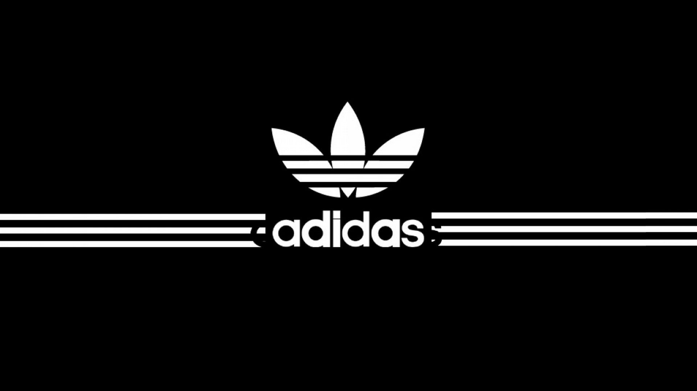
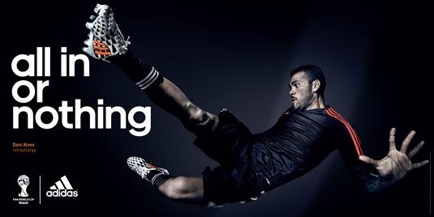
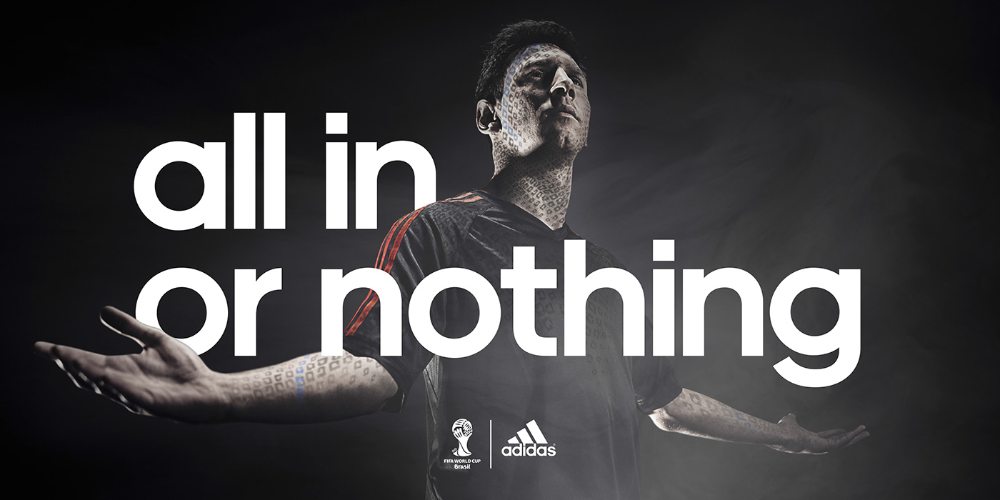

MKT/IMS 419 - Homework 3 - Start/Stop/Continue
Introduction
Adidas is a well-known global brand that has been in the market for more than 70 years. It is one of the world’s leading sportswear brands that designs, develops, produces, and markets a wide range of sports clothing, footwear, and accessories. Adidas’ marketing strategy is to position the brand as the most innovative and stylish in the sports industry. The company has adopted a multi-channel approach to digital branding that includes social media, influencer marketing, email marketing, and e-commerce. Adidas’ digital marketing campaigns are known for their creativity and engaging content that resonates with its target audience. This approach has helped the brand to increase its visibility, brand recognition, and customer loyalty in the competitive sports industry.

Start
Personalized Email Content
Personalization is a crucial aspect of email marketing as it allows brands to connect with customers on a more individualized level, providing them with content that resonates with their unique interests and needs. By leveraging customer data such as preferences, browsing behavior, and purchase history, Adidas can create tailored email campaigns that offer product recommendations, exclusive offers, and promotions that are more relevant to each customer. Adidas should start incorporating more personalized content in their email marketing strategy for higher open rates, click-through rates, and conversions.
Content Marketing
Content marketing is a highly effective strategy for building brand awareness, establishing thought leadership, and driving organic traffic to a brand’s website. Adidas could start investing more in content marketing efforts, such as creating engaging and informative blog posts, videos, and other forms of content that resonate with their target audience. This can help establish Adidas as a thought leader in their industry, drive organic traffic to their website, improve search engine rankings, and build stronger relationships with their audience. It also provides an opportunity for the brand to showcase their values and personality beyond just their products, which can help to differentiate them from their competitors.
Stop
Email Overload
While email marketing can be a powerful tool for reaching customers, it’s important for brands to strike a balance between promoting their products and overwhelming their customers with too many emails. If customers receive too many emails from a brand, they may start to tune them out or even unsubscribe from the email list, which can result in lower engagement rates and ultimately, lower sales.
To avoid email fatigue, Adidas should aim to reduce the frequency of their emails and ensure that each email provides real value to the customer. This could mean sending fewer emails per week or per month, with each email containing more valuable content such as product recommendations, exclusive offers, or new product releases. This approach can help to prevent customers from feeling bombarded with promotional emails and increase the likelihood that they will engage with the emails that they do receive.
A more optimal frequency for promotional emails may be around 3-4 per week at maximum, depending on the nature of the business and the audience being targeted. However, it’s important for Adidas to continually monitor email engagement rates and adjust their email frequency accordingly.
Sole Reliance on CTAs
Adidas should stop relying solely on call-to-action (CTA) emails that focus solely on promotions and discounts. They should diversify their email content to include other types of content that provide value to customers, such as product features, customer stories, or brand news. By diversifying their email content beyond just promotions and discounts, Adidas can create a more well-rounded and holistic email marketing strategy that resonates with a wider range of customers. This can ultimately help to build stronger relationships with customers, increase engagement rates, and drive long-term success for the brand.
Continue
Brand Consistency
Adidas should continue maintaining a consistent brand image across all their marketing channels, including email, social media, and customer reviews. This includes using consistent messaging, visual elements, and brand voice to ensure a cohesive and recognizable brand identity. By maintaining a consistent brand image across all marketing channels, Adidas can create a strong brand identity that resonates with customers, build trust and credibility, increase brand loyalty, and ultimately drive long-term success for the brand.


Mobile Optimization
Adidas should continue prioritizing mobile optimization for their website and other digital marketing channels. With the increasing use of mobile devices for online shopping and browsing, ensuring a seamless and user-friendly mobile experience can help drive engagement and conversions.